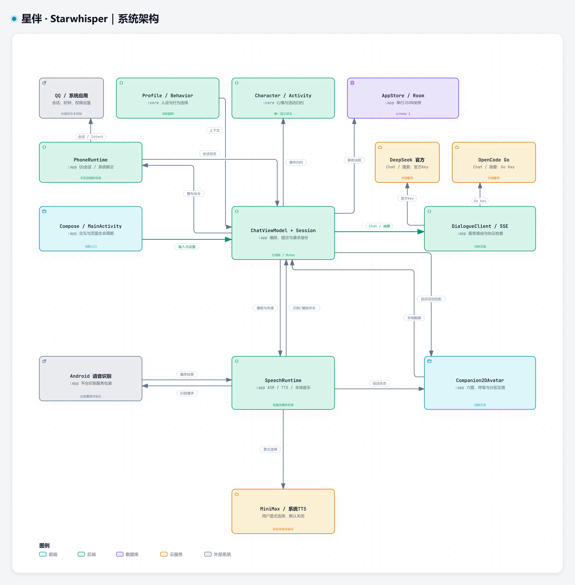
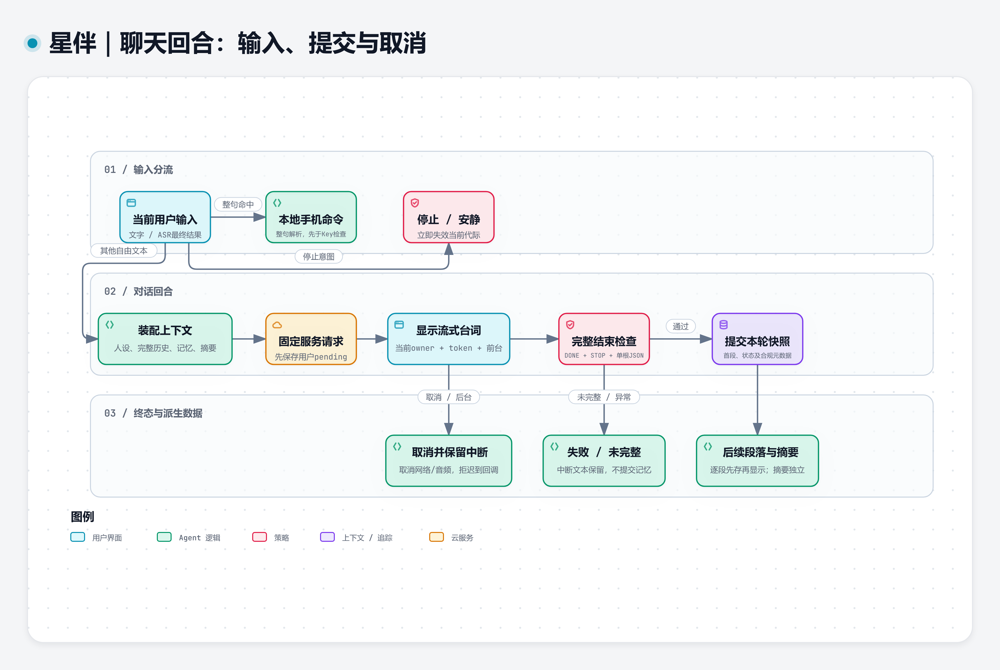
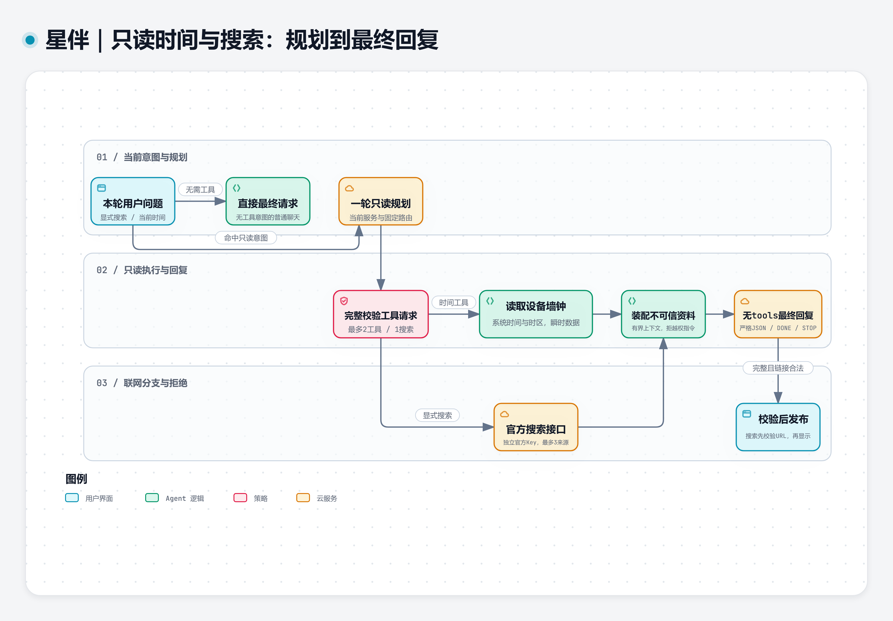
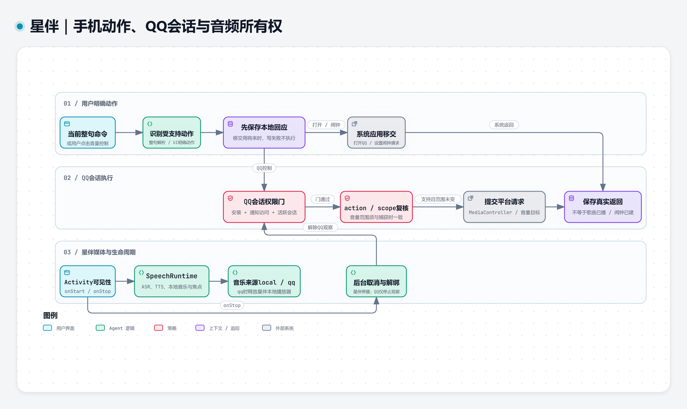
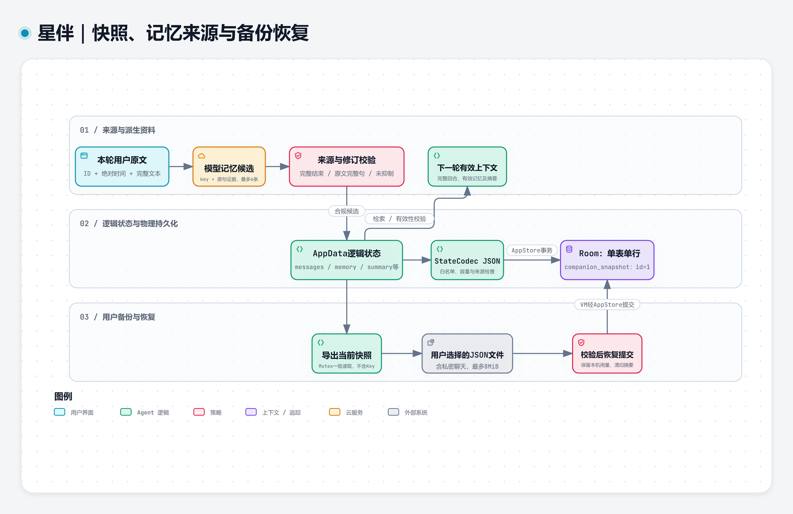

STARWHISPER / ARCHITECTURE ATLAS
星伴的设计，沿着真实源码读。
五个视图覆盖模块职责、回合提交、只读工具、手机与音频边界，以及带来源的本地记忆。当前主页是六张 2D 原画与轻微呼吸，图册只描述已经接入的能力。
GitHub 可直接预览 SVG/PNG。下载仓库后打开本页或各图 HTML，可离线查看、切换主题和导出；每张图都有对应的单一 JSON 源。











